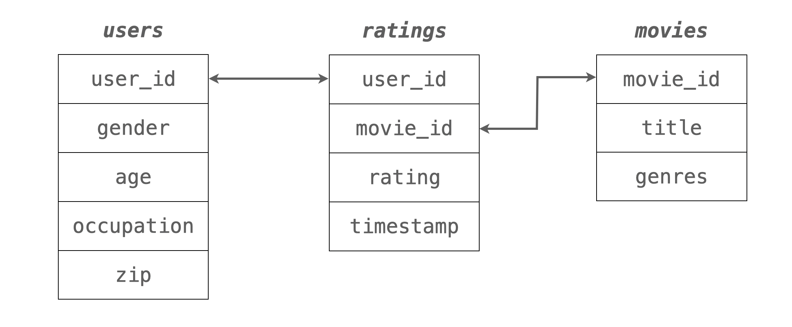

Load packages
# numerical calculation & data frames import numpy as npimport pandas as pd# visualization import matplotlib.pyplot as pltimport seaborn as snsimport seaborn.objects as so# statistics import statsmodels.api as sm# pandas options 'mode.copy_on_write' , True ) # pandas 2.0 = ' {:.2f} ' .format # pd.reset_option('display.float_format') = 8 # max number of rows to display # NumPy options = 2 , suppress= True ) # suppress scientific notation # For high resolution display import matplotlib_inline"retina" )
MovieLens 1M Dataset
Source: MovieLens 1M movie ratings
1990년대 후반에서 2000년대 초반의 영화 평가에 대한 3개의 relational data로 이루어져 있고,user_id, movie_id의 keys로 연결되어 있습니다.
users: 유저에 대한 정보ratings: 평점에 대한 정보movies: 영화에 대한 정보

ratings과 users 데이터를 merge한 후 user_rating 데이터셋을 만드세요.
= pd.merge(users, ratings)
user_id gender age occupation zip movie_id rating timestamp
0 1 F 1 10 48067 1193 5 978300760
1 1 F 1 10 48067 661 3 978302109
2 1 F 1 10 48067 914 3 978301968
3 1 F 1 10 48067 3408 4 978300275
... ... ... ... ... ... ... ... ...
1000205 6040 M 25 6 11106 1094 5 956704887
1000206 6040 M 25 6 11106 562 5 956704746
1000207 6040 M 25 6 11106 1096 4 956715648
1000208 6040 M 25 6 11106 1097 4 956715569
[1000209 rows x 8 columns]
다음과 같이 영화(movie_id)별로 남녀(gender)에 따른 rating의 평균과 그 개수(count)을 구해보세요.
= ("movie_id" , "gender" ])["rating" ]"mean" , "count" ])6 )
movie_id gender mean count
0 1 F 4.19 591
1 1 M 4.13 1486
2 2 F 3.28 176
3 2 M 3.18 525
4 3 F 3.07 136
5 3 M 2.99 342
다음과 같이 평가의 수가 적을수록 그 편차가 커지는 현상을 확인해보세요. 평가의 수가 많은 영화일수록 평가가 높아지는 현상에 대해 설명할 수 있을까요? 또한, 남녀의 평가에 차이가 벌어지는 현상을 설명할 수 있을까요?
= "count" , y= "mean" , color= "gender" )= .1 ))5 ))= "Dark2" )
유명한/잘 만든 영화를 더 많이 봐서? 좋게 본 영화는 더 평점을 내리는 경향이 있어서?
# 남녀 총 평점 수를 고려해서 비율로 보면 "total" ] = mean_ratings.groupby("gender" )["count" ].transform("sum" )= mean_ratings.assign(= lambda x: x["count" ] / x["total" ]
movie_id gender mean count total prop
0 1 F 4.19 591 246440 0.00
1 1 M 4.13 1486 753769 0.00
2 2 F 3.28 176 246440 0.00
3 2 M 3.18 525 753769 0.00
... ... ... ... ... ... ...
7148 3951 F 3.71 17 246440 0.00
7149 3951 M 4.04 23 753769 0.00
7150 3952 F 3.76 105 246440 0.00
7151 3952 M 3.79 283 753769 0.00
[7152 rows x 6 columns]
= "prop" , y= "mean" , color= "gender" )= .1 ))5 ))# .scale(color="Dark2", x="log") # log scale = (2 , 4.5 ))
3번에서 seaborn.objects에 .limit(x=(0, 500), y=(2.5, 4.5))을 추가하여 평가 개수(count)가 0에서 500사이이고, 평균 rating이 2.5에서 4.5 사이인 것으로 확대해서 보고, 평가 개수가 몇 개 정도부터 남녀의 평가의 차이가 대략 일정하게 되는지 살펴보세요.
= "count" , y= "mean" , color= "gender" )= .1 ))5 ))= "Dark2" )= (0 , 500 ), y= (2.5 , 4.5 ))
영화별로 남녀의 평가가 크게 갈리는 영화들을 찾기 위해
5.1 2번에서 구한 데이터에서 남녀 모두 rating이 300개 이상 있는 영화로만 간추려보세요.
5.2 이 데이터를 popular_movies라고 명명하고,
이 데이터를 gender에 관해 wide format으로 변환한 후; pivot()을 이용
여자의 평균 rating에서 남자의 평균 rating을 뺀 그 차이를 데이터에 추가한 후; assign()을 이용
그 차이로 sort한 후,
5.3 여자의 선호가 더 높은 영화 5편과 남자의 선호가 더 높은 영화 5편 (선호 차이의 크기 순서로)을 구해보세요.
이를 위해서 movies 테이블 안의 영화제목(title)을 merge()를 이용해 추가하세요.
5.1 2번에서 구한 데이터에서 남녀 모두 rating이 300개 이상 있는 영화로만 간추려보세요.
movie_id gender mean count total prop
0 1 F 4.19 591 246440 0.00
1 1 M 4.13 1486 753769 0.00
2 2 F 3.28 176 246440 0.00
3 2 M 3.18 525 753769 0.00
... ... ... ... ... ... ...
7148 3951 F 3.71 17 246440 0.00
7149 3951 M 4.04 23 753769 0.00
7150 3952 F 3.76 105 246440 0.00
7151 3952 M 3.79 283 753769 0.00
[7152 rows x 6 columns]
# groupby .filter()를 이용 = ("movie_id" , group_keys= False )filter (lambda x: (x["count" ] >= 300 ).all ()) # groupby filtering, 남녀 모두 300개 이상이어야 하므로 .all()
movie_id gender mean count total prop
0 1 F 4.19 591 246440 0.00
1 1 M 4.13 1486 753769 0.00
20 11 F 3.92 379 246440 0.00
21 11 M 3.72 654 753769 0.00
... ... ... ... ... ... ...
6451 3578 F 4.09 385 246440 0.00
6452 3578 M 4.11 1539 753769 0.00
6773 3751 F 3.89 367 246440 0.00
6774 3751 M 3.88 962 753769 0.00
[262 rows x 6 columns]
# 또는 = ('count >= 300' )"movie_id" )filter (lambda x: x.shape[0 ] == 2 ) # df.shape: (row 개수, col 개수) 6 )
movie_id gender mean count total prop
0 1 F 4.19 591 246440 0.00
1 1 M 4.13 1486 753769 0.00
20 11 F 3.92 379 246440 0.00
21 11 M 3.72 654 753769 0.00
32 17 F 4.23 420 246440 0.00
33 17 M 3.82 415 753769 0.00
5.2 이 데이터를 popular_movies라고 명명하고,gender에 관해 wide format으로 변환한 후; pivot()을 이용assign()을 이용
= (= "movie_id" , columns= "gender" , values= "mean" )= lambda x: x.F - x.M)"diffs" )
gender F M diffs
movie_id
2791 3.66 4.06 -0.41
1221 4.04 4.44 -0.40
589 3.79 4.12 -0.33
1214 3.89 4.22 -0.33
... ... ... ...
17 4.23 3.82 0.41
920 4.27 3.83 0.44
1028 4.20 3.73 0.47
2657 3.67 3.16 0.51
[131 rows x 3 columns]
5.3 여자의 선호가 더 큰 영화 5편과 남자의 선호가 더 큰 영화 5편 (선호 차이의 크기 순서로)을 구해보세요. 이를 위해서 movies 테이블에서 영화제목을 merge()를 이용해 구하세요.
= diffs_fm.merge("movie_id" , "title" ]], left_index= True , right_on= "movie_id" # left_index: index를 키로 사용할 때; diffs_fm의 movie_id가 index!
F M diffs movie_id title
2722 3.66 4.06 -0.41 2791 Airplane! (1980)
1203 4.04 4.44 -0.40 1221 Godfather: Part II, The (1974)
585 3.79 4.12 -0.33 589 Terminator 2: Judgment Day (1991)
1196 3.89 4.22 -0.33 1214 Alien (1979)
1220 3.90 4.21 -0.31 1240 Terminator, The (1984)
F M diffs movie_id title
1171 4.17 3.77 0.41 1188 Strictly Ballroom (1992)
16 4.23 3.82 0.41 17 Sense and Sensibility (1995)
908 4.27 3.83 0.44 920 Gone with the Wind (1939)
1015 4.20 3.73 0.47 1028 Mary Poppins (1964)
2588 3.67 3.16 0.51 2657 Rocky Horror Picture Show, The (1975)
3번에서 플랏에서 유추되듯이 평가의 개수가 영화의 완성도 혹은 인기도를 파악할 수 있는 대략적인 지표가 될 수 있습니다. 즉, 평가수가 많을 수록 평점도 높습니다. 따라서 평가 개수를 바탕으로 인기도(popularity)를 수치화 하려고 합니다.
6.1 우선, 3번 플랏에서 평가수가 같다면 여성이 더 높은 평점을 주는 것으로 보이는데, 이 현상을 다음과 같이 자세히 들여다 봅니다.
이 함수의 의미를 파악하고, 20단계 (0, 1, 2, …, 19)의 popularity가 성별을 고려하여 각 영화에 부여되었음을 이해합니다.
이제, 다음과 같이 popularity에 따라 평점이 높아지는 현상을 성별을 고려한 후 본 결과를 플랏을 통해 확인해봅니다.
def popular(g):"popularity" ] = pd.qcut(g["count" ], q= 20 , labels= False )return g= mean_ratings.groupby("gender" , group_keys= False ).apply (popular)
/var/folders/tv/fwb_421x50z8bj5v37vw680r0000gn/T/ipykernel_3161/3304174707.py:5: DeprecationWarning: DataFrameGroupBy.apply operated on the grouping columns. This behavior is deprecated, and in a future version of pandas the grouping columns will be excluded from the operation. Either pass `include_groups=False` to exclude the groupings or explicitly select the grouping columns after groupby to silence this warning.
popularity = mean_ratings.groupby("gender", group_keys=False).apply(popular)
movie_id gender mean count total prop popularity
0 1 F 4.19 591 246440 0.00 19
1 1 M 4.13 1486 753769 0.00 19
2 2 F 3.28 176 246440 0.00 17
3 2 M 3.18 525 753769 0.00 17
... ... ... ... ... ... ... ...
7148 3951 F 3.71 17 246440 0.00 6
7149 3951 M 4.04 23 753769 0.00 4
7150 3952 F 3.76 105 246440 0.00 15
7151 3952 M 3.79 283 753769 0.00 15
[7152 rows x 7 columns]
= "popularity" , y= "mean" , color= "gender" )= 0.01 ), so.Jitter(width= .5 ))5 ))= so.Continuous().tick(at= np.arange(20 ))) # tick: x축에 표시할 값 = (5 , 6 ))
남녀별로 평점의 편차가 큰, 즉 의견이 분분한 영화들을 구해봅니다.
5번에서 구한 popular_movies에 한해 남녀별 평점의 편차를 표준편차로 구해보고,
남녀별로 편차 상위 2개만 표시합니다. (동등한 순위 모두)
영화제목을 movies 데이터와 merge하여 표시합니다.
movie_id gender mean count total prop
0 1 F 4.19 591 246440 0.00
1 1 M 4.13 1486 753769 0.00
20 11 F 3.92 379 246440 0.00
21 11 M 3.72 654 753769 0.00
... ... ... ... ... ... ...
6451 3578 F 4.09 385 246440 0.00
6452 3578 M 4.11 1539 753769 0.00
6773 3751 F 3.89 367 246440 0.00
6774 3751 M 3.88 962 753769 0.00
[262 rows x 6 columns]
= ("gender" , "movie_id" ])["rating" ]"std" , "count" ])
std count
gender movie_id
F 1 0.87 591
2 1.02 176
3 1.08 136
4 0.93 85
... ... ...
M 3949 0.92 224
3950 1.12 44
3951 1.07 23
3952 0.90 283
[7152 rows x 2 columns]
def top(g, n= 3 ):return g.nlargest(n, "std" , keep= "all" )= ("count > 100" ) # 100개 이상의 평점을 받은 영화만 제한 "gender" ], group_keys= False )apply (top, n= 2 )
std count
gender movie_id
F 2700 1.37 258
288 1.36 114
M 1924 1.47 208
3864 1.35 115
= "movie_id" )
gender std count title \
0 F 1.37 258 South Park: Bigger, Longer and Uncut (1999)
1 F 1.36 114 Natural Born Killers (1994)
2 M 1.47 208 Plan 9 from Outer Space (1958)
3 M 1.35 115 Godzilla 2000 (Gojira ni-sen mireniamu) (1999)
genres
0 Animation|Comedy
1 Action|Thriller
2 Horror|Sci-Fi
3 Action|Adventure|Sci-Fi
이제 초점을 유저들에게 돌려, 유저들의 특성을 고려해봅니다. 일반적으로 같은 소스(사람)에서 온 데이터는 비슷한 성향을 띄는데 이를 depenency 의 문제라고 합니다. 한 가족 구성원으로부터 왔다든가 같은 학교의 학생들과 같이 구체적으로 명시하기 어렵지만 데이터 상에서 비슷한 군집을 이룹니다. 이 데이터의 경우 동일은 유저들의 특성이 존재할 수 있는데 예를 들어 후한 점수를 준다든가 같은 유저라도 어떤 장르의 영화는 매우 낮은 평점을 준다든가 하는 현상이 있을 수 있는데 이를 알아봅니다.
8.1 우선 개인별(성별로 나눠)로 몇 개정도나 평점을 주었는지 분포를 살펴봅니다.
8.2 개인별로 평점의 평균과 표준편차를 구합니다.
8.1 우선 개인별(성별로 나눠)로 몇 개정도나 평점을 주었는지 분포를 살펴봅니다.
= user_rating.groupby(["user_id" , "gender" ]).size().reset_index(name= "n" )
user_id gender n
0 1 F 53
1 2 M 129
2 3 M 51
3 4 M 21
... ... ... ...
6036 6037 F 202
6037 6038 F 20
6038 6039 F 123
6039 6040 M 341
[6040 rows x 3 columns]
= (= "n" , color= "gender" )
8.2 유저 개인별로 평점(rating)의 평균과 표준편차, 개수를 구합니다.
= ("user_id" )["rating" ]"mean" , "std" , "count" ])
mean std count
user_id
1 4.19 0.68 53
2 3.71 1.00 129
3 3.90 0.98 51
4 4.19 1.08 21
... ... ... ...
6037 3.72 0.88 202
6038 3.80 1.11 20
6039 3.88 0.73 123
6040 3.58 1.18 341
[6040 rows x 3 columns]
8.3 이 세 변수의 관계를 보기 위해, 평점 개수를 10개의 구간으로 pd.cut을 이용해 discretize해서 살펴봅니다.
8.1에서 분포를 살펴보았으면, 개수를 먼저 log 스케일로 변환해서 구간으로 쪼개는 것이 유리함을 알 것입니다.
즉, 다수는 2백개 이하의 평점을 남긴 반면, 소수의 유저들 중에는 수천개의 평점을 남긴 사람도 있습니다.
10개 구간으로 discretized된 (log) count를 .facet을 이용해 다음과 같이 유저들 각자의 평점 평균과 표준편차의 관계를 살펴봅니다.
이 현상을 설명할 수 있을까요?
평균적으로 낮은 평점을 준 소위 짠 유저들이 더 비판적이고 고민끝에 평점을 준 것이라고 추측할 수 있을까요?
"lcount" ] = np.log(user_stats["count" ])"lcount_cat" ] = pd.cut(user_stats["lcount" ], 10 , labels= False )
'mean > 2 & lcount_cat < 9' ), x= "mean" , y= "std" )= .3 ))5 ))"lcount_cat" , wrap= 3 )= (15 , 12 ))
# count의 범위를 표시하기 위해 = ('mean > 2' )"lcount_cat" )["count" ].agg(["min" , "max" ])range = lambda x: list (zip (x["min" ], x["max" ])))"range" ] = range_counts["range" ].astype(str )"lcount_cat2" ] = user_stats["lcount_cat" ].map (range_counts["range" ])
'mean > 2 & lcount_cat < 9' ), x= "mean" , y= "std" )= .3 ))5 ))"lcount_cat2" , wrap= 3 )= (15 , 12 ))
'mean > 2 & lcount_cat < 9' ), x= "mean" , y= "std" )1 ), color= "lcount_cat" )
장르별로 남녀의 선호 차이를 살펴봅니다.
movies 데이터는 genres가 | 기호로 나누어 표기되어 있어서 분석을 위해서는 가공할 필요가 있는데, 다음 코드를 이용해 long format으로 바꾸세요.
= movies.copy()"genres" ] = movies_long["genres" ].str .split("|" )= movies_long.explode("genres" )
= movies_long.merge(user_rating)
movie_id title genres user_id gender age \
0 1 Toy Story (1995) Animation 1 F 1
1 1 Toy Story (1995) Animation 6 F 50
2 1 Toy Story (1995) Animation 8 M 25
3 1 Toy Story (1995) Animation 9 M 25
... ... ... ... ... ... ...
2101811 3952 Contender, The (2000) Thriller 5831 M 25
2101812 3952 Contender, The (2000) Thriller 5837 M 25
2101813 3952 Contender, The (2000) Thriller 5927 M 35
2101814 3952 Contender, The (2000) Thriller 5998 M 18
occupation zip rating timestamp
0 10 48067 5 978824268
1 9 55117 4 978237008
2 12 11413 4 978233496
3 17 61614 5 978225952
... ... ... ... ...
2101811 1 92120 3 986223125
2101812 7 60607 4 1011902656
2101813 14 10003 1 979852537
2101814 4 61820 4 1001781044
[2101815 rows x 10 columns]
9.1 장르별로 평점의 개수를 간단히 플랏으로 살펴보는데 남녀 별로 따로 비율이 나오도록 해보고, 남녀 차이가 특히 많이 나는 장르를 살펴보세요.
= "genres" , color= "gender" ) # y에 genres가 나오도록! "proportion" , common_norm= False ), so.Dodge(gap= .2 )) # gap: bar 사이의 간격
9.2 이번에는 장르별로 평점의 평균 를 남녀별로 간단히 플랏으로 확인해보세요.
= "genres" , x= "rating" , color= "gender" )= (3 , 4.2 ))
9.3 위의 플랏에서 살펴본 평균 평점의 값을 직접 구해봅니다. 장르별, 남녀로 그룹핑을 하여 평균 평점을 다음과 같이 나오도록 구해보세요.
= ("genres" , "gender" ])["rating" ]
gender genres F M
0 Action 3.49 3.49
1 Adventure 3.51 3.47
2 Animation 3.74 3.66
3 Children's 3.57 3.36
.. ... ... ...
14 Sci-Fi 3.45 3.47
15 Thriller 3.57 3.57
16 War 3.89 3.89
17 Western 3.55 3.66
[18 rows x 3 columns]
# pivot_table을 이용하면, = "genres" , columns= "gender" , values= "rating" )
gender F M
genres
Action 3.49 3.49
Adventure 3.51 3.47
Animation 3.74 3.66
Children's 3.57 3.36
... ... ...
Sci-Fi 3.45 3.47
Thriller 3.57 3.57
War 3.89 3.89
Western 3.55 3.66
[18 rows x 2 columns]
9.4 영화별 남녀의 평균 평점의 차이(Female - Male) 순으로 정렬된 플랏을 대략적으로 다음과 같이 그려봅니다.
= genre_gender_wide.assign(= lambda x: x.F - x.M"diff" )
gender genres F M diff
17 Western 3.55 3.66 -0.10
9 Film-Noir 4.02 4.09 -0.07
5 Crime 3.69 3.71 -0.02
14 Sci-Fi 3.45 3.47 -0.02
.. ... ... ... ...
8 Fantasy 3.51 3.43 0.09
13 Romance 3.67 3.57 0.10
11 Musical 3.81 3.60 0.21
3 Children's 3.57 3.36 0.21
[18 rows x 4 columns]
= ("genres" , "gender" ])["rating" ]
genres gender rating
0 Action F 3.49
1 Action M 3.49
2 Adventure F 3.51
3 Adventure M 3.47
.. ... ... ...
32 War F 3.89
33 War M 3.89
34 Western F 3.55
35 Western M 3.66
[36 rows x 3 columns]
= "genres" , x= "rating" , color= "gender" )= so.Nominal(order= genre_gender_diff["genres" ].values),= (3 , 4.2 ))
# 평균과 표준편차를 error bar를 이용해 볼 수도 있음. = "rating" , y= "genres" , color= "gender" )"mean" , errorbar= "sd" ), so.Dodge())= 3 ), so.Agg("mean" ), so.Dodge())= so.Nominal(order= genre_gender_diff["genres" ].values)
장르별로 나이대에 따른 영화시청에 차이가 있는지 살펴봅니다.
10.1 우선, 위에서 western 장르가 남녀의 평점 차이가 가장 크게 나타나 남성이 선호하는 것으로 보이는데 western 장르만 따로 떼어 나이대 별로 rating에 차이가 있는지 살펴봅니다.
= movies_long_all.query('genres == "Western"' )
= "age" , y= "rating" , color= "gender" )5 ))
= western.groupby(["age" , "gender" ])["rating" ].agg(["mean" , "size" ]).reset_index()
age gender mean size
0 1 F 3.60 91
1 1 M 3.57 244
2 18 F 3.24 503
3 18 M 3.52 2360
.. ... ... ... ...
10 50 F 3.83 330
11 50 M 3.73 2090
12 56 F 3.77 220
13 56 M 3.80 1113
[14 rows x 4 columns]
"total" ] = western_age_gender.groupby("gender" )["size" ].transform("sum" )
= western_age_gender.assign(= lambda x: x["size" ] / x["total" ]
age gender mean size total ratio
0 1 F 3.60 91 3477 0.03
1 1 M 3.57 244 17206 0.01
2 18 F 3.24 503 3477 0.14
3 18 M 3.52 2360 17206 0.14
.. ... ... ... ... ... ...
10 50 F 3.83 330 3477 0.09
11 50 M 3.73 2090 17206 0.12
12 56 F 3.77 220 3477 0.06
13 56 M 3.80 1113 17206 0.06
[14 rows x 6 columns]
= "age" , y= "mean" , pointsize= "ratio" , color= "gender" )= (5 , 25 ))= so.Continuous().tick(at= [1 , 18 , 25 , 35 , 45 , 50 , 56 ]))
= "age" , y= "rating" , color= "gender" )5 ))"genres" , wrap= 5 )= False )= (10 , 8 ))= so.Continuous().tick(at= [1 , 18 , 25 , 35 , 45 , 50 , 56 ]))
# 평균 선으로 표시 = "age" , y= "rating" , color= "gender" )= "." ), so.Agg())"genres" , wrap= 5 )= False )= (10 , 8 ))= so.Continuous().tick(at= [1 , 18 , 25 , 35 , 45 , 50 , 56 ]))
영화 제목에 있는 출시년도를 추출해 이용하기 위해 다음 코드를 활용하세요.
"year" ] = movies["title" ].str .extract(r'\((\d {4} )\)' ).astype("int" )
movie_id title genres year
0 1 Toy Story (1995) Animation|Children's|Comedy 1995
1 2 Jumanji (1995) Adventure|Children's|Fantasy 1995
2 3 Grumpier Old Men (1995) Comedy|Romance 1995
3 4 Waiting to Exhale (1995) Comedy|Drama 1995
... ... ... ... ...
3879 3949 Requiem for a Dream (2000) Drama 2000
3880 3950 Tigerland (2000) Drama 2000
3881 3951 Two Family House (2000) Drama 2000
3882 3952 Contender, The (2000) Drama|Thriller 2000
[3883 rows x 4 columns]
11.1 먼저 출시년도별로 얼마나 영화가 있는지 분포를 살펴보세요.
= "year" )
11.2 출시년도가 없는 영화가 있는가요?
= False )
year
1996 345
1995 342
1998 337
1997 315
...
1919 3
1922 2
1920 2
1921 1
Name: count, Length: 81, dtype: int64
11.3 오래된 영화일 수록 나이든 사람들의 시청 비율이 높을지에 대해 분포를 살펴보세요.
= pd.merge(user_rating[["user_id" , "gender" , "age" , "movie_id" , "rating" ]], movies)3 )
user_id gender age movie_id rating \
0 1 F 1 1193 5
1 1 F 1 661 3
2 1 F 1 914 3
title genres year
0 One Flew Over the Cuckoo's Nest (1975) Drama 1975
1 James and the Giant Peach (1996) Animation|Children's|Musical 1996
2 My Fair Lady (1964) Musical|Romance 1964
= year_movies.assign(= lambda x: pd.Categorical(x.age.astype("string" ), categories= ["1" , "18" , "25" , "35" , "45" , "50" , "56" ], ordered= True )
= "year" , color= "age" )"proportion" , common_norm= False , discrete= True ))= False )"age" , wrap= 1 )= (8 , 12 ))
# 성별에 따라서도 나누어 보면, = "year" , color= "age" )"proportion" , common_norm= ["color" , "col" ], discrete= True ))= False )= "age" , col= "gender" )= (10 , 12 ))
10년 기준으로 년대를 정했을 때, 코미디 장르의 영화 비율의 년대별 변화를 살펴봅니다.
"year" ] = movies_long["title" ].str .extract(r'\((\d {4} )\)' ).astype("int" )= movies_long.assign(= lambda x: x.year // 10 * 10
movie_id title genres year decade
0 1 Toy Story (1995) Animation 1995 1990
0 1 Toy Story (1995) Children's 1995 1990
0 1 Toy Story (1995) Comedy 1995 1990
1 2 Jumanji (1995) Adventure 1995 1990
... ... ... ... ... ...
3880 3950 Tigerland (2000) Drama 2000 2000
3881 3951 Two Family House (2000) Drama 2000 2000
3882 3952 Contender, The (2000) Drama 2000 2000
3882 3952 Contender, The (2000) Thriller 2000 2000
[6408 rows x 5 columns]
# pd.crosstab의 비율을 이용하면, = pd.crosstab("decade" ], movies_long_10["genres" ], normalize= "index"
decade genres
1910 Action 0.20
Adventure 0.20
Animation 0.00
Children's 0.00
...
2000 Sci-Fi 0.04
Thriller 0.10
War 0.01
Western 0.00
Length: 180, dtype: float64
= "perc" ), x= "decade" , y= "perc" , color= "genres" )"genres" , wrap= 5 )= False )= (12 , 8 ))
= "perc" ).query('genres == "Comedy"' ), x= "decade" , y= "perc" )
Wide format의 이용
= pd.crosstab("decade" ], movies_long_10["genres" ], normalize= "index" 3 )
genres Action Adventure Animation Children's Comedy Crime Documentary \
decade
1910 0.20 0.20 0.00 0.00 0.20 0.00 0.00
1920 0.03 0.03 0.00 0.00 0.33 0.03 0.00
1930 0.02 0.05 0.02 0.03 0.19 0.03 0.01
genres Drama Fantasy Film-Noir Horror Musical Mystery Romance Sci-Fi \
decade
1910 0.40 0.00 0.00 0.00 0.00 0.00 0.00 0.00
1920 0.36 0.00 0.00 0.03 0.03 0.00 0.05 0.03
1930 0.21 0.00 0.01 0.06 0.09 0.04 0.12 0.01
genres Thriller War Western
decade
1910 0.00 0.00 0.00
1920 0.05 0.05 0.00
1930 0.07 0.04 0.01
# Plot using pandas or matplotlib = "line" ,figsize= (10 , 6 ), subplots= True , layout= (4 , 5 ));
# Plot using pandas or matplotlib = "line" ,figsize= (10 , 6 ), layout= (4 , 5 ));